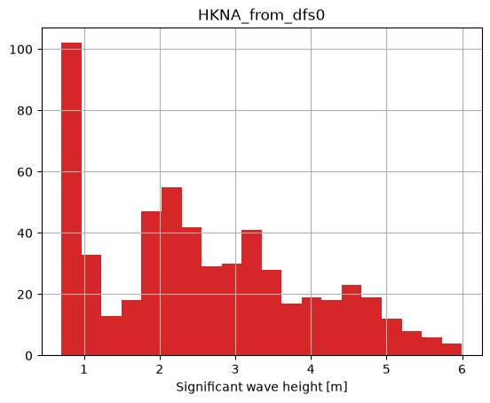
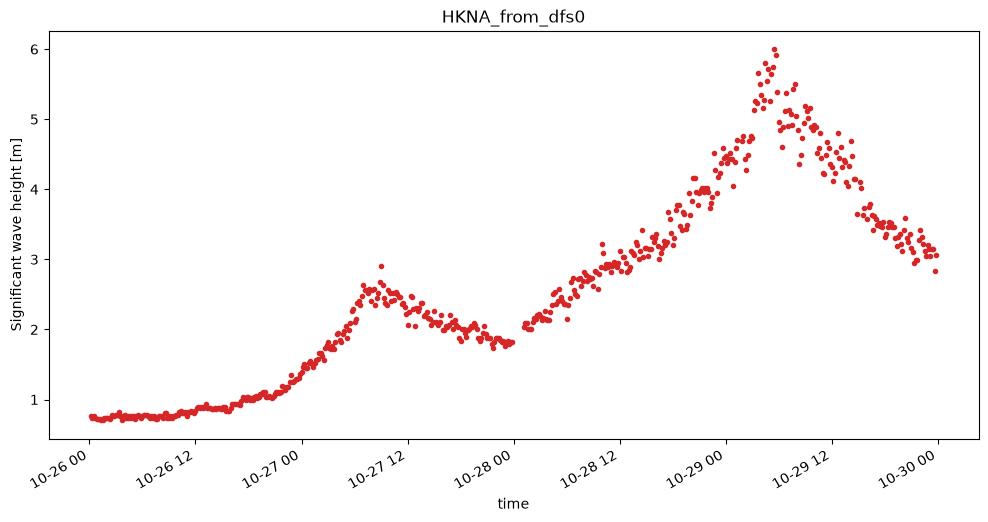
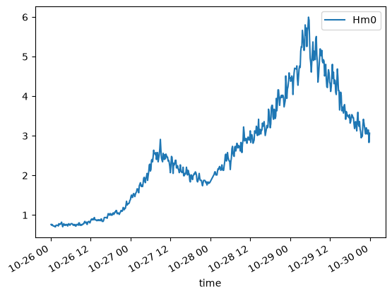
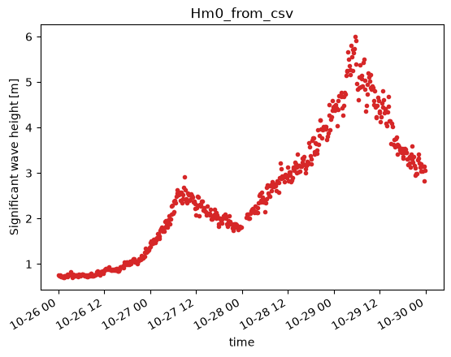
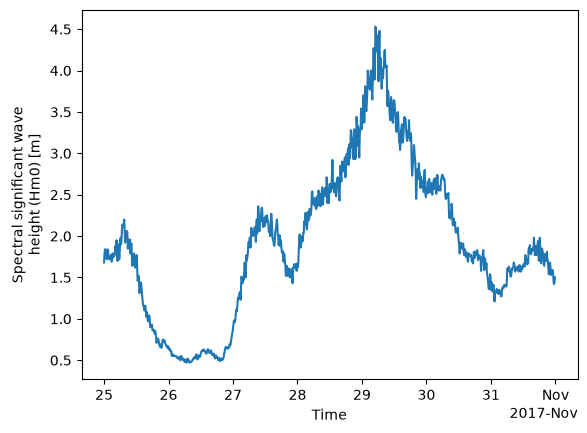
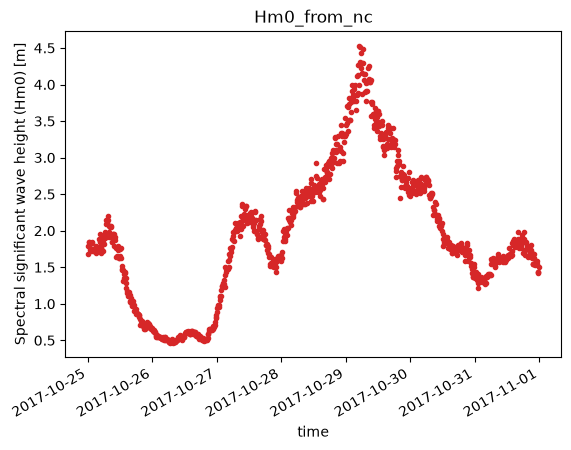

Point observations#
In order to skill assess our model, we need observational data. The data may come from a file or web api. We will cover the following situations here:
File
dfs0
csv/excel
NetCDF
REST API
modelskill has the class PointObservation for working with point observations.
Point observations consist of time-value-pairs (data) and meta data such as
data type (e.g. water level)
unit (e.g. meter)
position (coordinates + coordinate reference system)
ModelSkill is agnostic to the coordinate reference system (CRS) and it is therefore the responsibility of the user to make sure that all data (observations and model) use the same CRS.
import modelskill as ms
Observations from dfs0#
Dfs0 files are obviously a very common container format for point observation data at DHI. Besides the data (time-value-pairs), it typically contains meta data information about the data type (EUM type, e.g. water level) and data unit (EUMUnit, e.g. meter). It can potentially store geographical information too, but this is rarely the case. We typically need to provide this information ourselves.
fn = 'data/SW/HKNA_Hm0.dfs0'
pos = (4.2420, 52.6887) # LONG/LAT
The PointObservation class#
The PointObservation class can be instantiated with a dfs0 file name, the item, the position and optionally also a user-defined name.
PointObservation has basic properties like start_time, end_time, n_points, name, etc
PointObservation has two simple plot methods:
plot() - a time series plot
hist() - a histogram
Note that the PointObservation object takes a single item only.
o1 = ms.PointObservation(fn, item=0, x=pos[0], y=pos[1], name="HKNA_from_dfs0")
o1
<PointObservation>: HKNA_from_dfs0
Location: 4.242, 52.6887
Time: 2017-10-26 00:10:00 - 2017-10-29 23:50:00
Quantity: Significant wave height [m]
o1.time[0], o1.time[-1]
(Timestamp('2017-10-26 00:10:00'), Timestamp('2017-10-29 23:50:00'))
o1.n_points
564
o1.quantity
Quantity(name='Significant wave height', unit='m')
o1.plot.hist(bins=20);

o1.plot(figsize=(12,6));

Observations from csv/excel#
Pandas is our friend. ModelSkill PointObservation can be initialized with either a dfs0 or a pandas DataFrame. Hence, for other file types than dfs0 the workflow is to first create a DataFrame with the data e.g. using pd.read_csv() or pd.read_excel().
You need to provide the position and preferably also EUM info (for nice plotting).
import pandas as pd
df = pd.read_csv('data/SW/HKNA_Hm0.csv', index_col=0, parse_dates=True) # make sure index is DateTimeIndex!
df.head()
| Hm0 | |
|---|---|
| time | |
| 2017-10-26 00:10:00 | 0.76172 |
| 2017-10-26 00:20:00 | 0.74219 |
| 2017-10-26 00:30:00 | 0.76172 |
| 2017-10-26 00:40:00 | 0.74219 |
| 2017-10-26 00:50:00 | 0.72266 |
df.plot();

o2 = ms.PointObservation(df, item="Hm0", x=pos[0], y=pos[1],
name='Hm0_from_csv',
quantity=ms.Quantity('Significant wave height', 'm'))
o2.plot();

Observations from NetCDF#
A NetCDF file is best handled with xarray. It often contains meta data that you can use for constructing your point observation object.
import xarray as xr
ds = xr.open_dataset('data/SW/Europlatform2.nc')
ds
<xarray.Dataset> Size: 251kB
Dimensions: (TIME: 1008, DEPTH: 2, POSITION: 4464, LATITUDE: 4464,
LONGITUDE: 4464)
Coordinates:
* TIME (TIME) datetime64[ns] 8kB 2017-10-25 ... 2017-10-31T23:50:00
* LATITUDE (LATITUDE) float32 18kB 52.0 52.0 52.0 52.0 ... 52.0 52.0 52.0
* LONGITUDE (LONGITUDE) float32 18kB 3.276 3.276 3.276 ... 3.276 3.276
Dimensions without coordinates: DEPTH, POSITION
Data variables: (12/18)
TIME_QC (TIME) float32 4kB ...
DEPH (TIME, DEPTH) float32 8kB ...
DEPH_QC (TIME, DEPTH) float32 8kB ...
POSITION_QC (POSITION) float32 18kB ...
VAVH (TIME, DEPTH) float64 16kB ...
VAVH_QC (TIME, DEPTH) float32 8kB ...
... ...
VTZA (TIME, DEPTH) float64 16kB ...
VTZA_QC (TIME, DEPTH) float32 8kB ...
TEMP (TIME, DEPTH) float64 16kB ...
TEMP_QC (TIME, DEPTH) float32 8kB ...
SWHT (TIME, DEPTH) float64 16kB ...
SWHT_QC (TIME, DEPTH) float32 8kB ...
Attributes: (12/51)
data_type: OceanSITES time-series data
platform_code: Europlatform2
platform_name:
institution: Rijkswaterstaat Water Traffic and Environ...
institution_edmo_code: 1526
wmo_platform_code:
... ...
data_assembly_center: BSH
wmo_inst_type:
id: NO_TS_MO_Europlatform2_201710
title: NWS - NRT in situ Observations
history: 2020-01-22T12:14:28Z : Creation; 2020-11-...
date_update: 2021-02-26T13:39:19Zpos = ds.LONGITUDE.values[0], ds.LATITUDE.values[0]
pos
(np.float32(3.276389), np.float32(51.99861))
ds.VHM0.isel(DEPTH=0)
<xarray.DataArray 'VHM0' (TIME: 1008)> Size: 8kB
[1008 values with dtype=float64]
Coordinates:
* TIME (TIME) datetime64[ns] 8kB 2017-10-25 ... 2017-10-31T23:50:00
Attributes: (12/16)
long_name: Spectral significant wave height (Hm0)
standard_name: sea_surface_wave_significant_height
units: m
valid_min: 1
valid_max: 30000
type_of_analysis: spectral analysis
... ...
resolution:
cell_methods:
sensor_depth: 0.0
sensor_mount:
sensor_orientation:
data_mode: Rds.VHM0.isel(DEPTH=0).plot();

df = ds.VHM0.isel(DEPTH=0).to_dataframe()
df.index = df.index.strftime('%Y-%m-%d %H:%M:%S')
df.head()
| VHM0 | |
|---|---|
| TIME | |
| 2017-10-25 00:00:00 | 1.68 |
| 2017-10-25 00:10:00 | 1.79 |
| 2017-10-25 00:20:00 | 1.84 |
| 2017-10-25 00:30:00 | 1.84 |
| 2017-10-25 00:40:00 | 1.76 |
o3 = ms.PointObservation(ds.VHM0.isel(DEPTH=0), x=pos[0], y=pos[1], name='Hm0_from_nc')
o3.plot();
